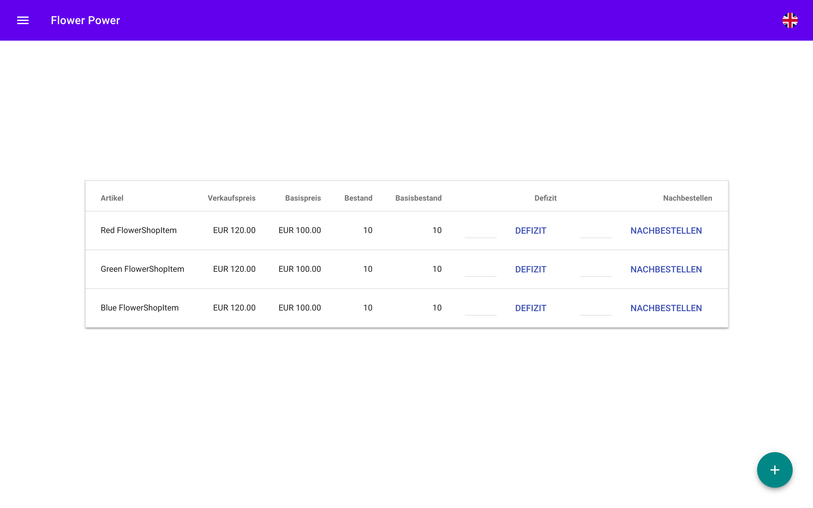
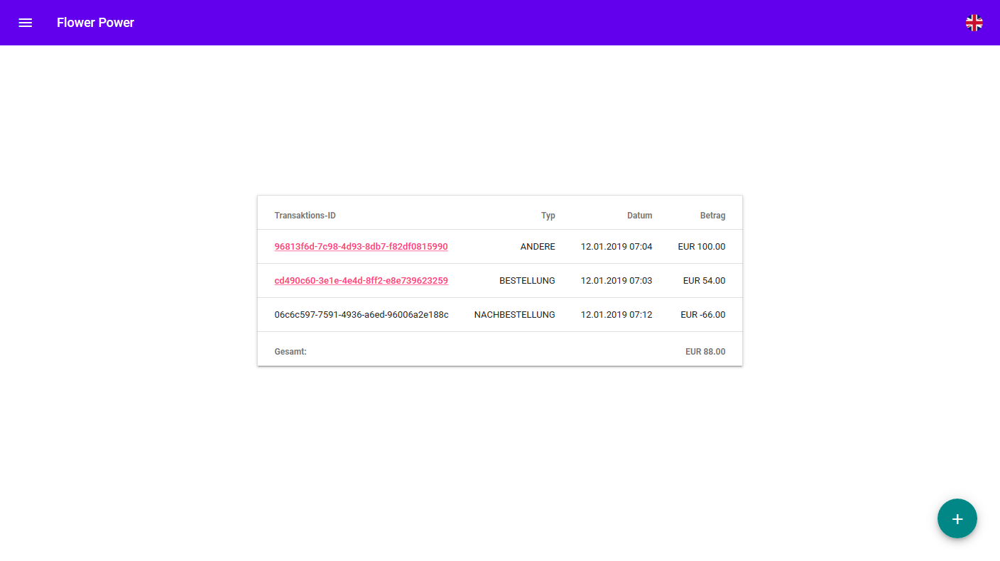

Produkte
Produkt anlegen
Produkte können über den mit einem "+" gekennzeichneten Floating Action Button in der Produktübersicht erreicht werden. Um ein Produkt anzulegen sind folgende Attribute erforderlich:
- Name
- Beschreibung
- Mindestens ein Gegenstand oder eine Dienstleistung
Weitere Gegenstände und Dienstleistungen sind optional. Ein Bild ist ebenfalls optional. Wird kein Bild bereitgestellt, wird im Katalog ein Platzhalter gezeigt.
Weiter Gegenstände und Dienstleistungen können über die Menüpunkte Inventar und Services hinzugefügt werden.
Produkt bearbeiten
Über die MEHR INFO Schaltfläche in der Fusszeile jeder Produkt-Karte kann ein Produkt bearbeitet werden. Hierbei gelten die selben Regeln wie beim Anlegen des Produkts.
Produkt löschen
Die Schaltfläche zum Entfernen eines Produktes befindet sich am Ende des Produkt bearbeiten Dialogs. Einmal entfernte Produkte können nicht wiederhergestellt werden.
Inventar
Eine Blume beim Großhändler nachbestellen:
Die Inhaberin hat die Möglichkeit über die Inventaransicht Produkte beim Großhändler nachzubestellen. Nachdem eine Nachbestellung getätigt wurde wird diese in dem Kassenstand aufgeführt. Eine automatische Nachbestellung wird durchgeführt, wenn der Bestand unter die Hälfte, der festgelegten Stückzahl fällt, in diesem Fall wird der Bestand vollständig aufgefüllt.
Den Warenbestand manuell reduzieren:
Die Inhaberin besitzt die Möglichkeit über die Inventar Ansicht Produkte manuell zu reduzieren. Nachdem ein Defizit für eine Blume erstellt wurde, wird dieser in der Defizitübersicht aufgeführt. Eine automatische Nachbestellung wird ausgelöst, wenn die Anzahl unter die Hälfte der festgelegten Stückzahl fällt, in diesem Fall wird der Bestand vollständig aufgefüllt.
Eine neue Blume/Service hinzufügen:
Blumen und Services können in der Inventar/Service Übersicht über den mit einem "+" gekennzeichneten Floating Action Button hinzugefügt werden.
Großhändler
Waren zur Inhaberin des Blumenladens schicken:
Der Großhändler kann manuell über seine Nachbestellungsansicht Blumen an die Ladeninhaberin schicken. Der Bestand wird nachfolgend direkt erhöht.
Benutzer
Ändern von Benutzerdaten:
Über das Seitenmenü ist die Benutzerübersicht erreichbar. Hier kann man Benutzerdaten einsehen und über einen Klick auf den Benutzernamen eines Nutzers erreicht man die spezifische Kontoansicht. Hier gibt es die Möglichkeit, Nutzerdaten wie zum Beispiel die Telefonnummer, das Passwort, aber auch die Rollen und damit die Zugriffsrechte des Benutzers zu ändern.
Bei letzterem muss beachtet werden, dass nur bestimmte Rollen-Werte vom System anerkannt werden:
| Rolle | Systemwert |
|---|---|
| Inhaber | ROLE_BOSS |
| Grosshändler | ROLE_WHOLESALER |
| Kunde | ROLE_CUSTOMER |
Buchführung
Übersicht aller Transaktionen:
In der Kassenübersicht werden jeglicher Geldfluss dokumentiert. So sieht man hier sowohl Kundenbestellungen, als auch Nachbestellungen beim Großhändler.
Kassenstand manuell verändern:
Über den Floating Action Button auf der Kassenübersicht hat man die Möglichkeit, eine eigene, Unabhängige Transaktion mit einer Beschreibung zu verbuchen. Solche Transaktionen werden in der Übersicht als ANDERE gekennzeichnet und können auch einen negative Geldwert haben.
Bis auf Nachbestellungen haben alle Transaktionen Ihre eigene Übersicht, erreichbar durch einen Klick auf die Transaktions-ID. Hier hat man auch die Möglichkeit, die Rechnung in PDF-Format herunterzuladen.
Termine und Events
Private Termine:
Über den Floating Action Button auf der Event-Übersicht kann man ein neues Event bzw. einen neuen Termin erstellen. Hierbei kann man den Termin auch privat schalten, wodurch dieser nur noch dem Inhaber sichtbar ist. Mit dieser Funktion verliert man wichtige Geschäftsbezogene Termine nicht aus den Augen.
Bestellungsspezifische Termine:
Sowohl der Inhaber als auch Kunden haben die Möglichkeit, beim Abschliessen einer Bestellung ein Lieferdatum auszuwählen. In diesem Fall wird automatisch ein privater Termin mit einem Hotlink zur Bestellungsübersicht erstellt, welcher Ganztägig am Lieferdatum gilt.